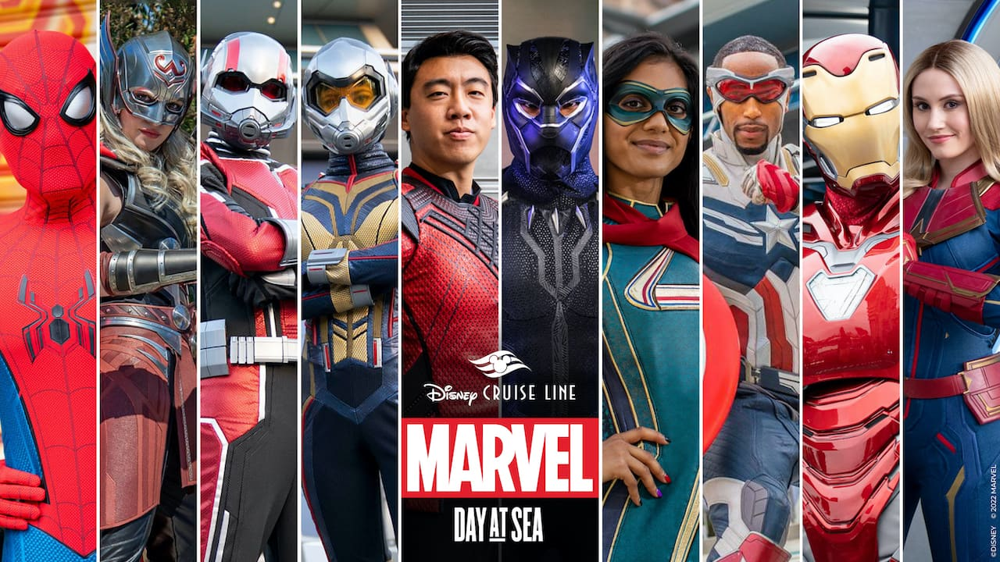

A film, also known as a "movie" or a "motion picture," is a series of moving images shown on a screen, usually with sound, that make up a story. Some people like to see new films at the theater as soon as they're released.
Movies are categorised based on which region has released that movie For ex:

From Godfather to Dark Knight and from Star Wars to Marvel, Hollywood came a long way and gave us many action-packed,thriller,fun and horror movies Some of the best hollywood movies are:
Special Mention Marvel
The Marvel Cinematic Universe (MCU) is an American media franchise and shared universe centered on a series of superhero films produced by Marvel Studios. The films are based on characters that appear in American comic books published by Marvel Comics. The franchise also includes television series, short films, digital series, and literature. The shared universe, much like the original Marvel Universe in comic books, was established by crossing over common plot elements, settings, cast, and characters.